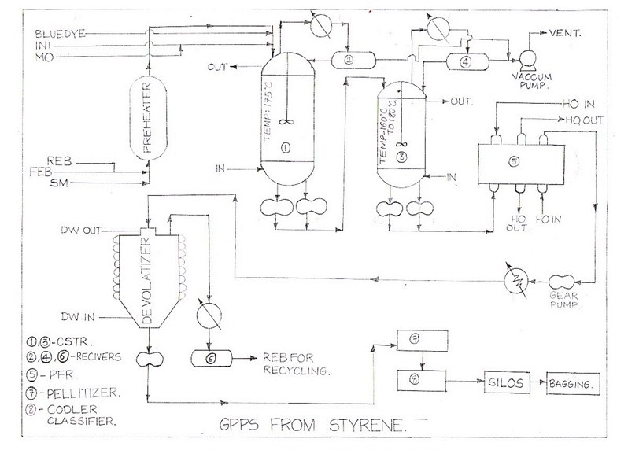

My Notes
Manufacturing Process of Polystyrene
-
Raw Materials:
- Styrene Monomer: Styrene (C8H8) is an aromatic hydrocarbon that exists as a colorless liquid at room temperature. It has a molecular weight of 104.15 g/mol and a boiling point of 145 °C.
-
Reaction:
- Reaction Mechanism: The polymerization of styrene occurs via a free-radical mechanism. The polymerization initiator, usually a peroxide catalyst, decomposes into free radicals (R•) when heated, which initiate the reaction by abstracting a hydrogen atom from a styrene monomer. This forms a new radical that reacts with another styrene monomer, leading to chain propagation. The reaction continues until termination, where two radicals combine or a chain transfer reaction occurs.
- Reaction Parameters:
- Temperature: The polymerization reaction is typically carried out at temperatures between 70-120 °C. Higher temperatures can increase the reaction rate but may also lead to undesirable side reactions or thermal degradation.
- Pressure: The reaction vessel is operated under atmospheric pressure or slightly elevated pressures to ensure proper mixing and control of reactant volatilization.
- Batch or Continuous Process:
- Batch Process: In a batch process, a fixed amount of styrene monomer and initiator are charged into the reactor. The reaction progresses until the desired conversion is achieved, after which the reaction mixture is cooled and processed further.
- Continuous Process: In a continuous process, fresh styrene monomer and initiator are continuously fed into the reactor while maintaining a steady-state condition. This allows for a more consistent production rate and higher efficiency.
- Molecular Weight Control:
- Chain Transfer Agents: Chain transfer agents, such as mercaptans, can be added during polymerization to control the molecular weight of the resulting polystyrene. These agents react with the growing polymer chains, effectively terminating their growth and leading to shorter polymer chains with lower molecular weights.
- Reaction Conditions: Factors such as monomer concentration, temperature, and reaction time can be adjusted to control the molecular weight of polystyrene. Higher monomer concentrations and longer reaction times generally result in higher molecular weights.
- Cooling and Solidification:
- Cooling Method: The reaction mixture is typically cooled using a cooling medium, such as chilled water, to lower the temperature and solidify the polystyrene resin.
- Solidification: As the temperature decreases, the polystyrene chains lose their mobility and become fixed in a solid state, forming a solidified mass or sheets known as polystyrene resin. The cooling rate can influence the crystallinity and mechanical properties of the final product.
- Mechanical Process: The solidified polystyrene resin is mechanically crushed or ground into small, uniform-sized particles known as pellets. This process involves using cutting or grinding equipment to break down the solidified resin.
- Pellet Size: The size of the pellets can vary depending on the desired application and subsequent processing methods.
Polystyrene is widely used in packaging, especially as foam packaging material to protect delicate items during transportation. It is also extensively used in the food service industry for disposable food and beverage containers due to its insulating properties. In the building and construction sector, polystyrene is used as thermal insulation for roofs, walls, and foundations, and it can be found in architectural moldings and lightweight concrete formulations. Additionally, polystyrene is utilized in consumer electronics and appliances for component casings and packaging, in the automotive industry for interior trim and dashboard parts, and in the medical field for disposable medical supplies. Polystyrene is also favored by artists and crafters for its lightweight and easy-to-shape properties, and it is used in hobbies, toys, and as insulation in cold chain applications.

General Purpose Polystyrene (GPPS) process flow diagram